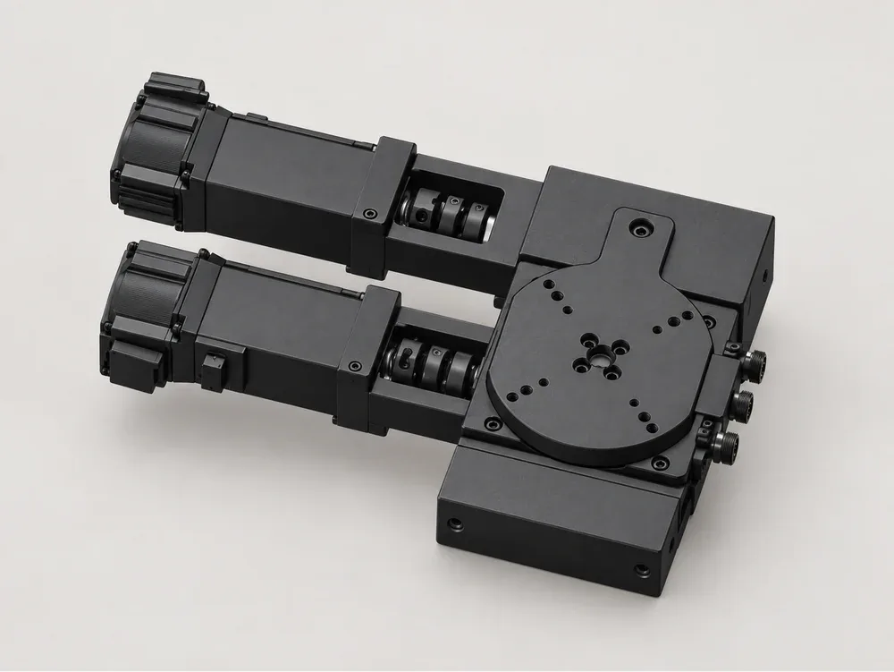
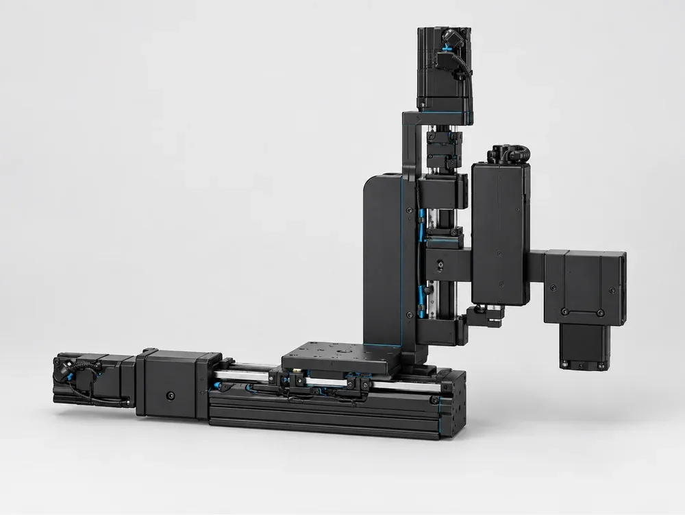
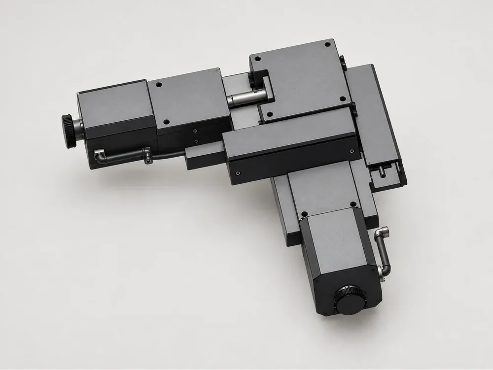

Multi-Axis Positioning Stages: XY, XZ, XYθ and XYZ Compared
Once a task needs more than one axis, the question stops being which stage and becomes which combination. Do you need a plane, a plane plus height, or a plane plus rotation? And should you stack single-axis stages yourself or buy an assembly? The multi-axis stage series at positioningstages.com publishes nine assemblies, and they make a useful map of the options.

Start from degrees of freedom, not from stages
List the motions the part needs relative to the tool, camera or beam. Each independent motion is a degree of freedom. If a camera only needs to scan a flat sample, that is XY. If it also needs focus, add Z. If the part arrives at a random angle and must be squared up, add θ. Specifying more axes than the process needs adds cost, height and error; specifying fewer means manual adjustment on every set-up.
| Configuration | Published example | Travel | Repeatability | Load |
|---|---|---|---|---|
| XY | CYDNXYS40-0401-5-20 | 5 mm each | XY ±1.5 µm | 3 kg |
| XY | CYDXY60-0801-25-42-R | 25 mm each | ±1 µm | 7 kg |
| XY | CYDY300-1205-100-57 | 100 mm each | ±3 µm | 20 kg |
| Xθ | CYDXR80-0802-40-100W-L | X 40 mm, θ 16° | X ±2 µm, θ ±0.002° | 15 kg |
| XYθ | CYDXYR120-1205-25-100W-L | XY 25 mm, θ 20.4° | XY ±2 µm, θ ±0.002° | 25 kg |
| XYZ | CYDX50-Y20-Z45-100W | X 50, Y 30, Z 45 mm | ±10 µm all axes | 5 kg |
Why works-aligned assemblies matter
When you stack two stages on a bench, you own the squareness between them, the adapter plate, the cable routing and the verification. The assemblies in this series are built and aligned at the works as one unit, which removes that work and is why each is quoted as a single part number rather than as its component stages. That matters most in XY scanning, where a small angle between X and Y shows up as a skewed image grid or a distorted measurement.

Stacked repeatability is not a single-axis number
A common shortcut is to take the repeatability of the best single axis and assume the stack inherits it. It does not. The lower axis carries the upper one, so its straightness and pitch move the upper axis too, and squareness between the axes adds a term that no single-axis specification contains. On the CYDXY60-0801-25-42-R product page, the stacked accuracy budget and orthogonality between axes are both listed as Not confirmed, rather than filled with a borrowed figure.
The site handles this honestly: where an assembled figure is not established, it leaves the field empty with the reason. On the XZ assembly CYDXN40-0601-15-28 + CYZS40-0601-6-28, for example, repeatability is marked not confirmed because the source labels do not match the XZ axes. Ask engineering for the assembled figure for the exact configuration you need. The reasoning behind these labels is on the specification basis page.
Choosing the stack order
In an XYθ assembly, rotation on top keeps the rotation centre fixed relative to the part, which suits alignment. Rotation at the bottom rotates the whole XY plane, which suits scanning a part at different orientations. For XYZ, putting Z on top keeps the moving mass on the vertical axis small, while Z at the bottom keeps the XY plane stiff. The engineering blog has a dedicated guide on choosing the order of an XYZ stack, and the single-axis rotary stages and vertical lift stages show what each building block contributes.
Payload also changes with configuration. The XY assemblies in the series range from 3 kg on the 5 mm CYDNXYS40-0401-5-20 to 20 kg on the 100 mm CYDY300-1205-100-57, and the servo-driven XYθ assembly carries 25 kg. Motor type follows the same split: the smaller assemblies use stepper motors, while CYDX50-Y20-Z45-100W, CYDXR80-0802-40-100W-L and CYDXYR120-1205-25-100W-L list servo drives. When comparing a stepper assembly with a servo assembly, compare like for like: the same axis set, the same travel, the same payload and the same named precision figure, rather than the headline repeatability alone. All nine assemblies run on crossed-roller guides.

From configuration to quotation
Write down the axis set, the travel per axis, the payload including fixtures, and whether your acceptance test is on single axes or on the assembled system. Then use the quotation form to attach a drawing or photo of the fixture. The full catalogue of 62 standard models is at positioningstages.com.
Frequently asked questions
What is the difference between XY, XZ, XYθ and XYZ?
XY translates in a plane, XZ adds height to one horizontal axis, XYθ adds rotation on top of a plane, and XYZ covers all three translations.
Are the assemblies stacked by the buyer?
No. On positioningstages.com they are built and aligned at the works as one unit and quoted as a single part number.
Is the repeatability of a stack the same as a single axis?
No. The lower axis carries the upper one and squareness between them adds a term no single-axis specification contains. Ask engineering for the assembled figure.
What is the largest XY travel in the series?
CYDY300-1205-100-57 offers 100 mm on X and Y with ±3 µm repeatability and a 20 kg load.
Contact
Planning a multi-axis set-up? Send the degrees of freedom, per-axis travel, payload and the assembled accuracy you need. Email sales@deyivision.com or visit the positioningstages.com contact page.